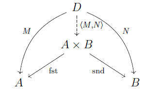
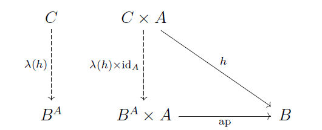

ITT (Intensional type theory) is a intuitionistic type theory that serves as the core theory for other type theories. Other type theories are merely extensions of ITT .
ETT (Extensional type theory) extends ITT with ER (equality of reflection) and UIP (uniqueness of identity proofs):
ETT=ITT+RT+UIPS
Since types are perceived as sets in ETT , ETT gives rise to a intuitionistic theory of sets.
HoTT extends ITT with HIT (higher inductive types) and UA (univalence axiom):
HoTT=ITT+HIT+UA
Since types are perceived as abstract spaces in HoTT , HoTT gives rise to a intuitionistic theory of weak∞−groupoids.
The last form of proposition in the negative fragment of IPL is implication.
However, to define implication, a different form of judgment is required: entailment, which is written as:
n≥0A1true,…,Antrue⊢Atrue
we can understand the left part as the “context”, denoted by Γ, or the assumptions for Atrue. So we can rewrite the conjunction as:
Γ⊢A∧BtrueΓ⊢AtrueΓ⊢Btrue(∧I)
Reflexivity:
Atrue⊢Atrue(R)
Transitivity:
CtrueAtrueAtrue⊢Ctrue(T)
Reflexivity and transitivity are undeniable properties of entailment
because they give meaning to assumptions—assumptions are strong enough to prove
conclusions (reflexivity), but are only as strong as the proofs they stand for (transitivity).
But there are also structural properties that can be denied: weakening , contraction , and permutation . Logics that deny any of these properties are called substructural logics.
Weakening:
Btrue⊢AtrueAtrue(W)
Contraction:
Atrue⊢CtrueAtrue,Atrue⊢Ctrue(C)
Denying contraction (along with weakening) leads to linear logic, in which we
wish to reason about the number of copies of an assumption. This is a powerful way
to express consumable resources. In this course, we will always have the principle of
contraction, however.
Permutation:
π(Γ)⊢CtrueΓ⊢Ctrue(P)
where π(Γ) is a permutation of Γ.
Denying permutation (along with weakening and contraction) leads to ordered,
or noncommutative, logic. It is a powerful way to express ordered structures, like
lists or even formal grammars. In this course, we will always have the principle of
permutation, however.
We use implication to internalize the entailment as a proposition: Btrue⊢Atrue is not a proposition while B⊃A is a proposition.
We may write the elimination rule as Atrue⊢BtrueA⊃Btrue. However, we can consider “Atrue⊢Btrue” as some stuff like function. We would prefer the uncurried form of elimination rule, which is:
BtrueA⊃BtrueAtrue(⊃E)
it’s somehow “(A, B) -> C” instread of “A -> (B -> C)”.
The unit of disjunction is falsehood, the proposition that is trivially never true, which we write as ⊥. Its formation rule is immdeidate evidence that ⊥ is a well-formed proposition:
⊥prop(⊥F)
Because ⊥ is never true, it has no introduction rule. However, it does have an elimination rule, which captures “ex falso quolibet”:
The elimination rules for conjunction (along with reflexivity of entailment) ensure
that A∧Btrue⊢Atrue and A∧Btrue⊢Btrue.
To ensure completeness of the order-theoretic formulation, we include the rules:
A∧B≤AA∧B≤B
which say that A∧B is a lower bound of A and B.
The introduction rule for conjunction ensures that Ctrue⊢A∧Btrue if both Ctrue⊢Atrue and Ctrue⊢Btrue. Order-theoretically, this is expressed as the rule:
C≤A∧BC≤AC≤B
which says that A∧B is larger than or equal to any lower bound of A and B.
Taken together these rules show that A∧B is the greatest lower bound, or meet, of A and B.
The introduction rules for disjunction ensure that A∨Btrue⊢Atrue and A∨Btrue⊢Btrue, we include the rules:
A≤A∨BB≤A∨B
which say that A∨B is an upper bound of A and B.
The elimination rule for disjunction (along with reflexivity of entailment) ensures that A∨Btrue⊢Ctrue if both Atrue⊢Ctrue and Btrue⊢Ctrue.
Order-theorectically, we have the rule:
A∨B≤CA≤CB≤C
which says that A∨B is as small as any upper bound of A and B.
Taken together these rules show that A∨B is the least upper bound, or join, of A and B.
The elimination rule for implication (along with reflexivity of entailment) ensures that Atrue,A⊃Btrue⊢B. For the order-theoretic formulation to be complete, we include the rule:
A∧(A⊃B)≤B
The introduction rule for implication ensures that Ctrue⊢A⊃Btrue if Atrue,Ctrue⊢Btrue. We have:
C≤A⊃BA∧C≤B
Taken together, A⊃B is the exact upper bound of the set {X∣A∧X≤B}.
What’s more, we can consider A⊃B as the exponential: BA.
Why? We use a more familiar denotation “A→B” for implication, you may realize that the set of functions from set A to set B is also denoted as BA.
The process of currying and uncurrying is just the arithmetic law:
Recall that IPL has the structure of a preorder, where we declare A≤B if and only if Atrue⊢Btrue.
Let T be some theory in IPL and define a relation ≃ on the propositions in T by:
A≃BifandonlyifA≤BandB≤A
Obviously, ≃ is an equivalence relation.
Definition. The Lindenbaum algebra of T is defined to be the collection of ≃-equivalence classes of propositions in T. Write A∗=[A]≃. The ordering on the Lindenbaum algebra is inherited from ≤.
Definition. A prop is decidable if and only if A∨¬Atrue.
Decidability is what separates constructive logic from classic logic: in classic logic, every proposition is decidable while in constructive logic, it’s not.
⊥,⊤ are decidable.
We would expect m=Nn is decidable, where =N denotes the quality of natural numbers.
we would not expect m=Rn is decidable, where =R denotes the quality of real numbers, because they are infinite.
Definition. A prop is stable if and only if (¬¬A)⊃Atrue.
Again, in classic logic, every proposition is stable, while in constructive logic let’s consider the following lemma:
Lemma. ¬¬(A∨¬A)true.
Proof: ¬A=A⊃⊥.
We must show ¬(A∨¬A)⊃⊥true.
We first prove ¬(A∨¬A)true⊢A⊃⊥true:
⊥A∨¬AtrueAtrue(∨I1)¬(A∨¬A)true(⊃E)
So in fact,¬(A∨¬A)true⊢¬Atrue.
Then we have
⊥A∨¬Atrue¬Atrue(∨I2)¬(A∨¬A)true(⊃E)
So
¬(A∨¬A)⊃⊥true¬(A∨¬A)true⊢⊥(⊃I)
The lemma says the exclude middle proposition A∨¬A is not stable since ¬¬(A∨¬A) can be proved but A∨¬A cannot.
A theory T has the DP (disjunctive property) if T⊢A∨B implies T⊢A or T⊢B.
Theorem. In IPL , if ∅⊢A∨Btrue then ∅⊢Atrue or ∅⊢Btrue.
Naive attempt at a proof: The idea is to perform induction on all
possible derivations ∇ of ∅⊢A∨Btrue.
Since ∅⊢A∨Btrue can only be obtained by ∨I1,∨I2 and ⊃E,∧E,∨E,⊥E.
If:
∅⊢A∨BtrueAtrue∇(∨I1)
Here we already obtained a proof for Atrue, ∨I2 is just similar.
If:
∅⊢A∨Btrue∅⊢C⊃A∨Btrue∇1∅⊢Ctrue∇2(⊃E)
then we can find that since ∅⊢C⊃A∨Btrue, there must be a proof for Ctrue⊢A∨Btrue(⊃I).
The we can use ∇2 to substitute all the occurence in ∇1 for Ctrue. Then we get a smaller derivation for ∅⊢A∨Btrue. Thus we can repeat the process and in finite repeatation we can fall back on ∨I1 or other deduction rules.
Definition. A deduction rule is admissible in IPL if nothing changes when it is added to the existing rules of IPL .
Theorem. The structural properties of ⊢IPL are admissible.
Proof:
Firstly we can prove that Reflexivity, Contraction and Exchange are admissible. Take Reflexivity as an example:
Γ⊢AtrueΓ⊢Atrue(R)
it is admissible in that it can be substituted by:
Γ⊢AtrueΓ⊢A∧AtrueΓ⊢Atrue(∧I)(∧E)
And for contraction, for any derivation Atrue⊢CtrueAtrue,Atrue⊢Ctrue∇ we can substitute any Atrue,Atrue in ∇ by Atrue.
So the rule does not change anything.
For weakening rule, we need to use the induction:
Suppose that Γ,Atrue⊢B1trueΓ⊢B1true and Γ,Atrue⊢B2trueΓ⊢B2true are admissible, then there will be derivation without weakening for them:
Then by induction we can shrink the derivation, until the proposition don’t have “∧,∨,¬”. The last proposition is proved by some rules other than weakening, so the weakening is admissible.
Other rules are proved in the same way. In a word, structural properties (Reflexivity, Contraction, Exchange, Weakening, Transitivity) are admissible, while negative and positive fragments (conjunction,disjunction)
are not.
We use the notation M:A to denote that M is a proof of proposition A.
To track the proofs, we will write:
x1:A1,...,xn:An⊢M:A
where each xi:Ai is a proof term.
We can think x1,...,xn as the hypothesis for the proof,
but what we really want is for them to behave like varaibles, the proof M will use the variables to prove.
# Structural Properties of Entailment with Proof Terms
Reflexivity/Variable rule:
Γ,x:A,Γ′⊢x:A(R/V)
Transitivity/Substitution
Γ,Γ′⊢[M/x]N:BΓ,x:A,Γ′⊢N:BΓ⊢M:A(T/S)
which means, if the previous proof can prove the proposition A, then x:A is no longer needed. We can substitute x with M in the proof N of B.
Weakening:
Γ,Γ′⊢M:AΓ⊢M:A(W)
Contraction:
If we have two different proofs for the same proposition x:A,y:A,then we can pick one of them z=x or z=y and substitute the other one with z:
We need the definitional equality to define the equality of two proofs:M:A,M′:A are the same. We denote it as M≡M′:A and want it to be the least congruence containing(closed under) the β rules.
A congruence is an equivalence relation that respects our operations, for the equivalence relation that respects our operations, it basically means that if M≡M′:A, then that their images under any operator should be equivalent. In
other words, we should be able to replace M with M′ everywhere. For example, it shoule be true that:
Γ⊢fst(M)≡fst(M′):AΓ⊢M≡M′:A∧B
There might be many congruences that contains the β rules. Given two congruences ≡ and ≡′, we say ≡ is finer that ≡′ if M≡′M′:A implies M≡M′:A.
In a Heyting Algebra, we have a preorder A≤B when A implies B.
However, we now wish to keep track of proofs, so if M
is a proof from A to B, we want to think it as a map M:A→B.
Identity map:
id:A→A
Composition:
We should be able to compose maps:
g∘f:A→Cf:A→Bg:B→C
Coherence Conditions:
idB∘f=f:A→Bf∘idA=f:A→Bh∘(g∘f)=(h∘g)∘f:A→D
Now we can think about objects in the category that corresponds to propositions given in the correspondence.
Terminal Object:
1 is the terminal object, also called the final object,
which corresponds to ⊤. For any object A there is a unique map A→1. This corresponds to ⊤ being the greatest object in a Heyting Algebra, meaning that for all A, A≤1.
Existence:
⟨⟩:A→1
Uniqueness:
M=⟨⟩:A→1M:A→1(η⊤)
Product:
For any objects A and B there is an object C=A×B that is the product of A and B, which corresponds to the join A∧B. The product A×B has the following universal property:

where the diagram commutes.
First, the existence condition means that there are maps:
fst:A×B→Asnd:A×B→B
The universal property says that for every object D such that M:D→A and N:D→B, there exists a unique map ⟨M,N⟩:D→A×B such that:
⟨M,N⟩:D→A×BM:D→AN:D→B
and the diagram commutes meaning
fst∘⟨M,N⟩=M:D→Asnd∘⟨M,N⟩=N:D→B
Furthermore, the map ⟨M,N⟩:D→A×B is unique in the sense that
P=⟨M,N⟩:D→A×BP:D→A×Bfst∘P=M:D→Asnd∘P:D→B
so in other words, ⟨fst∘P,snd∘P⟩=P.
Another way to say above is:
⟨fst,snd⟩=id⟨M,N⟩∘P=⟨M∘P,N∘P⟩
Exponential:
Given objects A and B, an exponential BA (which corresponds to A⊃B) is an object with the following universal property:

such that the diagram commutes.
This means that there exists a map ap:BA×A→B (application map) that corresponds to implication elimination.
The universal property is that for all objects C that have a map h:C×A→B, there exists a unique map λ(h):C→BA such that:
ap∘(λ(h)×idA)=h:C×A→B
This means that the diagram commutes. Another way to express the induced map is λ(h)×idA=⟨λ(h)∘fst,snd⟩.\
The map λ(h):C→BA is unique, meaning that
which says that given any object C with maps P:C→A and Q:C→B, there exists a unique map ⟨P,Q⟩:C→A×B such that the β rules make each cell commute, meaning P≡fst(⟨P,Q⟩,Q≡snd(⟨P,Q⟩).